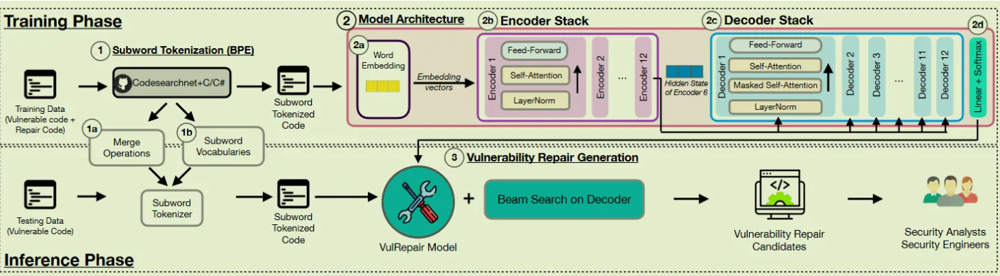
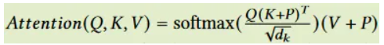
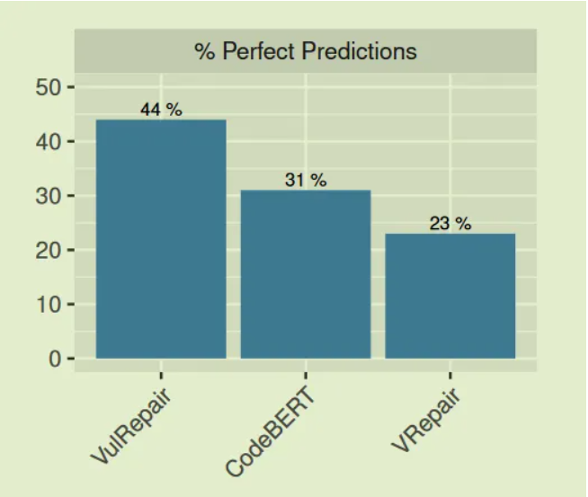
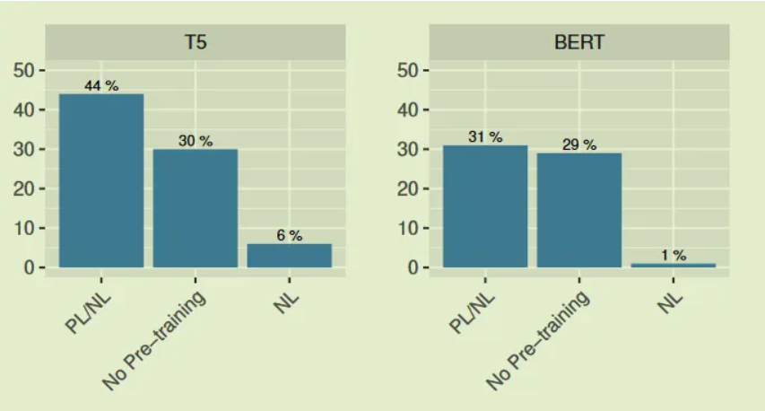
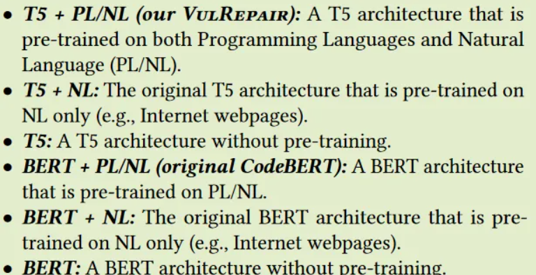
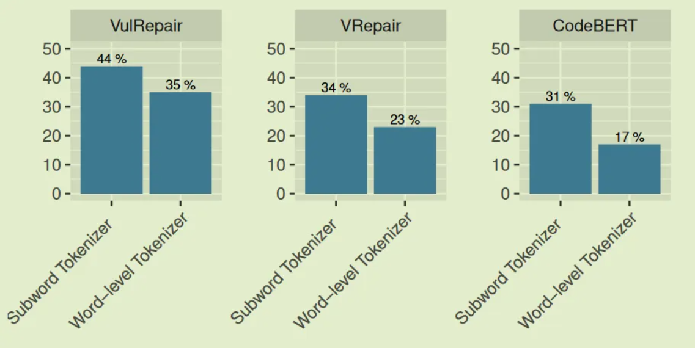
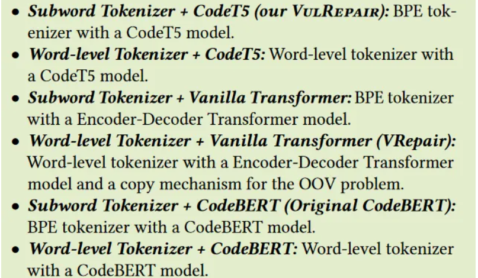
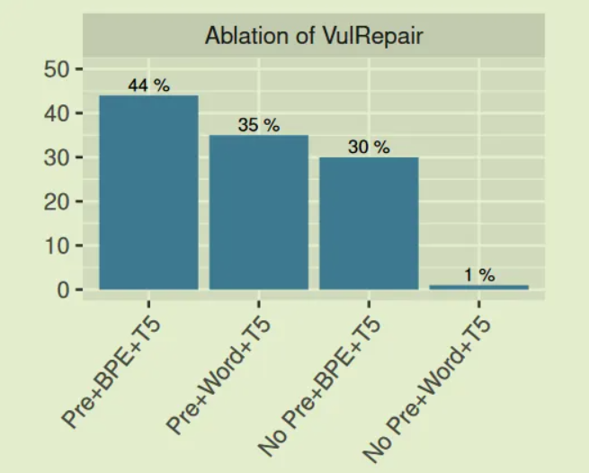
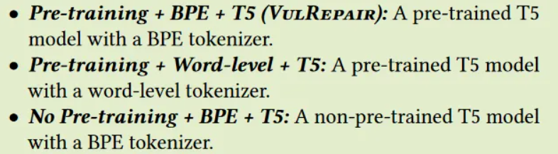
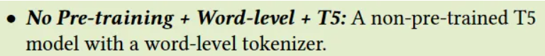

VulRepair: A T5-Based Automated Software Vulnerability Repair
下面分享一篇我发表在安全学术圈上的论文笔记。原文
原文标题：VulRepair: A T5-Based Automated Software Vulnerability Repair
原文作者：Michael Fu, Chakkrit Tantithamthavorn, Trung Le, Van Nguyen, Dinh Phung
原文链接：https://dl.acm.org/doi/10.1145/3540250.3549098
发表期刊：ESEC/FSE 22: 30th ACM Joint European Software Engineering Conference and Symposium on the Foundations of Software Engineering
笔记作者：senu11@安全学术圈
笔记小编：黄诚@安全学术圈
1.背景
作者关注到 VRepair，并发现有以下三个缺点：
1.bug修复数据集太小，可能导致向量表示不是最优的。
2.使用词级的分词器和复制机制处理OOV不太恰当，因其无法将从未出现在漏洞函数的token重用到漏洞修复中，限制了在补丁代码中生成新的token的能力
3.使用的Transformer模型利用绝对位置进行编码，限制了其自注意力机制学习输入序列中的token的相对位置信息的能力，可能会使VRepair注意到不正确的token，例如括号不是变量名。
为了解决上述问题，作者提出了一个新方法 VulRepair ，使用大型代码库（CodeSearchNet 和 Wang 等人提取的 C/C# 语料库，由八种不同的编程语言Ruby、JavaScript、Go、Python、Java、PHP、C、C#上共835万个函数组成）预训练的CodeT5组件，可以生成更好的向量表示；使用BPE分词器(也由上述大型代码库进行预训练)解决 OOV 问题；使用在自注意力机制中考虑相对位置的信息的T5架构。相比较于 VRepair，实现了 44% 的准确度。
2.数据集
作者使用和VRepair一样的数据集Big-Vul、CVEfixes来评估 VulRepair；且划分一致，即将实验数据集分为 70% 的训练数据、10% 的验证数据和 20% 的测试数据
为了保证实验的公平性，作者将数据集进行与VRepair一样的处理，即添加”<StartLoc>”、”<EndLoc>”、”<ModStart>”、”<ModEnd>”一样的标签，将这些标签添加到分词器中的主要目的是确保此类特殊标签不会被视为常规token，并且不会被分词器拆分；同时，这种特殊的标签有助于模型关注易受攻击的代码片段和漏洞修复区域
3.VulRepair
作者提出的VulRepair框架如下所示，分为三个步骤，粗略的介绍如下。

step1，使用基于 CodeT5 预训练语言模型 的 BPE(Byte Pair Encoding) 对 subword 进行分词，以生成每个函数的 subword token列表。
step2，构建了一个基于 T5 架构的 VulRepair 模型。对于每个已经进行 subword 分词的函数处理有四步：
step 2a，VulRepair 执行词嵌入以生成每个token的嵌入向量并将其组合成矩阵；
step2b ，step 2a 合成的矩阵被送入 T5 编码器堆栈；
step2c ，step2b 中的最后一个 T5 编码器的输出被送入每个 T5 解码器；
step2d ，T5 解码器堆栈的输出被馈送到具有 softmax 激活的线性层以生成词汇表的概率分布。
step3 ，在词汇的概率分布之上利用 Beam search来生成最终候选词作为预测。
3.1.代码表示
对于每个具有漏洞的函数进行代码表示处理有两个步骤。
3.1.1.BPE Subword Tokenization
上文提到的 step 1 包含两个步骤。
step 1a. 生成合并操作(generating merge operations)以确定应如何拆分单词；
step 1b. 根据 Subword 词汇表执行合并操作。
具体来说，BPE 会将所有token拆分为字符序列，以及确定应该合并为新符号的最常见符号对（例如两个连续字符对）。 BPE 是一种将稀有标记拆分为有意义的子词并同时保留常见标记（即不会将常见单词拆分为更小的子词）的算法。例如，函数名称 IsValidSize 将被拆分为子词列表 [“IsValid”, “Size”]，稀有词 IsValidSize 被拆分为两个常见词，IsValid 和 Size。
BPE subword tokenization 有助于在对各种token进行分词时减少词汇表的大小，其将稀有token拆分为多个subword，而不是直接将完整token添加到词汇表中，且BPE确保在漏洞修复中能够生成从未出现在漏洞函数中的新token。
为了更好的进行代码生成任务，作者添加了“<s>”和“</s>”标记来表示序列的开头 (BOS) 和序列的结尾 (EOS)；“<pad>”标记用于将输入序列填充到相同的长度；在词汇表中添加了四个特殊标记（“<StartLoc>”、“<EndLoc>”、“<ModStart>”、“<ModEnd>”）作为额外的词汇 ID，其在分词时不会被拆分
3.1.2.词嵌入
源代码由多个token组成，每个token的语义依赖于上下文和其在函数中的位置，捕获代码上下文及其在函数中的位置很重要。此步骤的目的是捕获token的语义和其在函数中的位置以生成嵌入向量。
对于每个已经进行subword分词的函数，在 step 2a 中，为每个subword token生成一个 [1x768] 的嵌入向量，并将其组合成一个矩阵，以表示给定token与其他token之间的联系；为了捕获token的语义，利用在上面讨论的预训练分词器相同的语料库上预训练的词嵌入向量；为了捕获函数中每个token的位置，利用相对位置进行嵌入，该嵌入将在自注意力计算期间计算并添加到 K矩阵 和 V矩阵中。
3.2.VulRepair模型结构
此学习模型使用的CodeT5的默认配置，即12个编码器、12个解码器、hidden size为786、12个注意力头
3.2.1.Encoder Stack
在 step 2b 中，实现了 12 层编码器块的堆栈，以导出解码器使用的编码器隐藏状态。与原始的 Transformer 编码器类似，每个编码器块都从层归一化开始，其中仅重新缩放激活且不应用附加偏差;每个编码器块由两个子组件组成：一个具有相对位置编码的多头自注意力层 ，后跟一个前馈神经网络;每个编码器中的每个子组件（即自注意力和 FFNN）周围都有一个残差连接。
自注意力机制使用点积运算(dot product operation)计算每个token的相关分数，其中每个token与自身和其他token交互一次。其依赖于三个主要向量，Query、Key 和 Value。Query 是当前token的表示，用于根据存储在 Key 向量中的key对所有其他token进行评分；每个 token 的注意力得分是通过对所有 Query 向量和 Key 向量进行点积得到的；然后使用 Softmax 函数将注意力分数归一化为概率以获得注意力权重；最后，可以通过Value向量和注意力权重向量之间的点积来更新Value向量。
与VRepair利用带有词嵌入层的绝对位置编码层来捕获输入序列中的位置信息不同，作者使用相对位置编码来考虑输入序列中相对位置的表示和token之间的距离(the relation-aware self-attention mechanism)。VulRepair中使用的自注意是一个具有相对位置编码的缩放点积自注意力（scaled dot-product self-attention with relative position encoding）。自注意使用𝑄，𝐾，𝑉，𝑃四个矩阵计算。相对位置信息P作为Key矩阵和Value矩阵的附加分量提供给模型：

其中P是点积运算中两个输入的边表示，以确定token之间的位置信息.
与利用每个位置的固定嵌入的绝对位置编码不同，成对位置编码（pairwise positional encoding）根据自注意力操作中 K 和 Q 之间的偏移量产生不同的学习嵌入。因此，它可以有效地捕获token之间的相关信息。
为了捕获输入序列更丰富的语义，作者使用多头机制来实现自注意力，能够让模型同时关注来自不同位置的不同代码表示的子空间的信息。对于 d 维 Q、K、V 向量，作者将这些向量分成 h 个头，其中每个头有 d/h 维。在所有的自注意力计算之后，将每个头再次连接起来，输入一个完全连接的前馈神经网络，包括两个线性变换，中间有一个 ReLU 激活函数。
多头机制可以总结为以下等式：
𝑀𝑢𝑙𝑡𝑖𝐻𝑒𝑎𝑑 (𝑄, 𝐾, 𝑉 ) = 𝐶𝑜𝑛𝑐𝑎𝑡 ($head_1$, …, $head_ℎ$)$W^𝑂$
$head_i$ = Attention(${𝑄𝑊_𝑖}^Q$ , ${K𝑊_𝑖}^K$ ,${V𝑊_𝑖}^V$)
$𝑊^𝑂$ 用于连接后线性投影到预期维度。
3.2.2.Decoder Stack
step 2c ，由十二层解码器块组成，根据最后一个编码器块提供的隐藏状态生成漏洞修复。每个解码器块都以编码器块中的层归一化开始；每个解码器块由三个子组件组成：具有相对位置编码的masked多头自注意层、具有相对位置编码的多头编码-解码器自注意力机制、前馈神经网络；与编码器块相同，每个解码器中的每个子组件周围都有一个残差连接，然后是层归一化步骤。生成模型的训练阶段使用的masked多头自注意来限制模型预测下一个标记而不关注后面的上下文，在该阶段模型将只能在生成过程中处理先前的标记。
3.2.3.Linear and Softmax Layer
线性层是一个完全连接的神经网络，它将解码器堆栈产生的向量投影到更大的逻辑向量中，其中单元格的数量等于词汇表中唯一token的数量；下面的 Softmax 层将值转换为加起来为 1 的概率分布，用于生成step3 中的最终输出。
3.3.漏洞补丁生成
step 3输出后，利用 beam search 根据条件概率在每个时间步为输入序列选择多个漏洞修复选者；候选者的数量取决于 beam宽度 β 的参数设置。换句话说， beam search在每个时间步使用最佳优先搜索策略以最高概率选择最佳 β 位修复候选者。当遇到 EOS token（即“”）时， beam search终止。
4.实验
作者使用训练集去微调预训练的 COdeT5 模型获得合适的权重用于漏洞修复，训练的过程中使用交叉熵损失（H(p,q)=-${\Sigma}_{x∈X}$p(x)logq(x)）更新模型，并在预测序列中的每个位置和真实序列中的每个位置之间进行优化；其中 X 是BPE分词器生成的token ，𝑝 是真实概率分布, 𝑞 是预测的概率分布。作者使用验证集按时期监控训练过程，并根据针对验证集（而非测试集）的最佳损失值选择最佳微调权重，以获得最佳模型。
微调过程中，学习速率为2$e^{-5}$且线性衰减，将反向传播与 AdamW 优化器 结合使用，后者被广泛用于微调基于 Transformer 的模型以更新模型并最小化损失函数。
(RQ1) What is the accuracy of our VulRepair for generating software vulnerability repairs?
VulRepair与两种基线方法进行对比，beam 为50

(RQ2) What is the benefit of using a pre-training component for vulnerability repairs?


(RQ3) What is the benefit of using BPE tokenization for vulnerability repairs?


(RQ4) What are the contributions of the components of our VulRepair?


